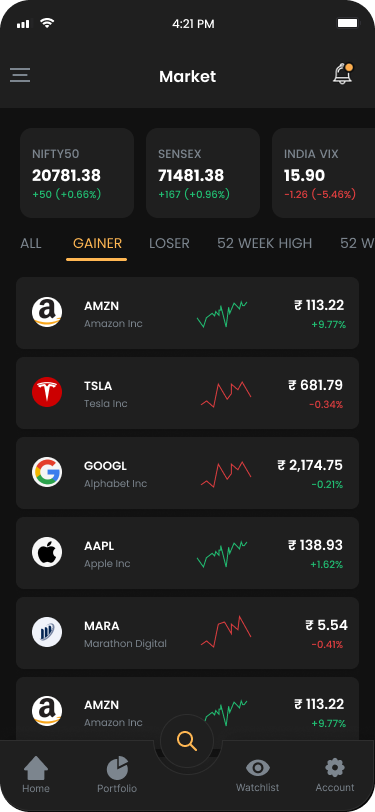
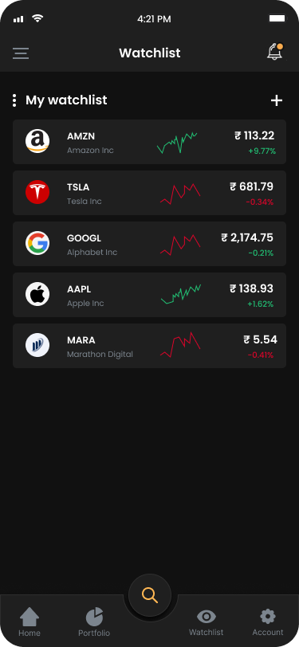
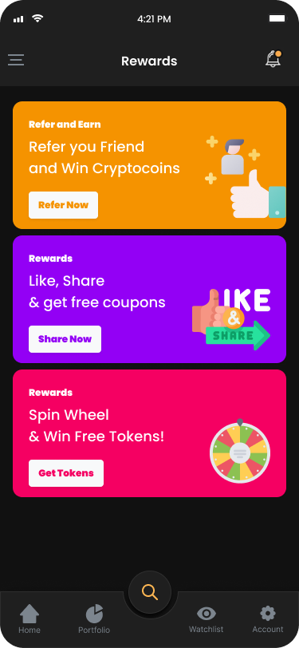

Fintech Product Case Study
Designing an Action-Driven Trading Experience for Confident Decisions
How I designed an action-driven mobile trading experience to simplify onboarding, portfolio visibility, and decision-making — using user behavior insights and UX-led product structuring.
Why TradeUp Exists
A trading product needed to feel easier to read without reducing depth
TradeUp sits in a high-trust category where hesitation can come from interface complexity as much as market risk. The product direction focused on making key actions feel clearer, safer, and easier to understand on mobile.
TradeUp
A consumer trading app for market access, watchlists, portfolio tracking, and orders.
Fintech Mobile Product
Designed for high-trust, action-heavy investor workflows.
Retail Investors
From newer investors to active users who need speed and confidence.
Clarity under pressure
Financial density and decision anxiety made it harder to act with confidence.
UX / Product Design
I worked across research synthesis, flows, wireframes, UI direction, and UAT support.
Clearer trading journeys
The experience became easier to scan, easier to trust, and easier to act through.
The Core Problem
Speed mattered, but trust mattered more in the moments before action
Trading products cannot rely on visual polish alone. Newer investors needed better orientation, active users needed faster access to what mattered, and key actions had to feel deliberate rather than risky or rushed.
Where friction showed up most
The clearest pain points appeared in onboarding, portfolio review, quote reading, and trade confirmation. Important information was present, but not always surfaced with the hierarchy users needed when money was involved.
The product challenge was to reduce hesitation without oversimplifying a serious financial workflow.
Heavy onboarding
New users could feel intimidated before reaching the product's core value.
Dense market context
Quotes and market data needed clearer signal hierarchy on smaller screens.
Portfolio readability
Performance metrics were available, but not always easy to parse at a glance.
Execution confidence
Trade actions needed stronger reassurance in final decision moments.
User Insight
Control mattered more than feature density
The strongest signal from research was not a demand for more features. It was a need to feel informed and in control while moving through complex financial tasks on mobile.
Observed in research and behavior
- Newer investors wanted reassurance before acting.
- Active users still expected fast navigation and quick access to quotes.
- Portfolio health had to be readable without forcing deep interpretation.
What this meant for product direction
- Key actions needed stronger hierarchy and less clutter.
- Financial signals had to feel legible before secondary details.
- Confirmation steps needed to reduce hesitation, not add more doubt.
Turning Point
The insight that framed the rest of the work
"I want to feel in control, but not overwhelmed when the market is moving."
What this changed in the design direction
- Primary information moved ahead of secondary financial detail.
- Navigation and flows became more direct for repeat trading tasks.
- Visual hierarchy was tuned to improve confidence before execution.
User Insights & Persona
The product had to make complex information feel usable on mobile
Once the need for clarity was established, the user profile became more specific: people who wanted faster access to information and action, but not at the cost of confidence or trust.
Confidence cues matter
Users hesitated when trade actions felt abrupt or insufficiently explained.
Portfolio health needs hierarchy
Key metrics had to stand out before deeper analysis and secondary details.
Speed still matters
Frequent users wanted direct access to quotes, watchlists, and actions.
Mobile clarity is strategic
Readability, spacing, and action priority shape how trustworthy the product feels.
- Understand quote context quickly
- Track portfolio health without friction
- Reach key actions in fewer steps
- Feel confident before placing trades
- Too much data competing for attention
- Trade flows that felt abrupt or dense
- Important signals buried in the layout
- Higher hesitation in critical action moments
My Role
Turning research signals into clearer product structure and screen decisions
My role was to connect investor behavior, product clarity, and mobile execution into a direction that could support both trust and speed.
Core contribution
I worked across the product design flow
- Synthesized user pain points and identified decision-heavy moments.
- Mapped flows for onboarding, quotes, portfolio review, and trade execution.
- Created wireframes and high-fidelity directions for core mobile screens.
- Improved hierarchy, readability, and action visibility across the app.
- Supported UAT and production-facing refinement.
Decision lens
How I approached the work
Critical financial actions had to feel deliberate, not visually rushed.
Important data moved forward so users could read the screen faster.
Every decision was shaped around limited space and high-stakes user context.
Design Decisions
From exploration to clearer product decisions
The design work focused on reducing friction in the moments that mattered most: understanding the market, reviewing holdings, and deciding whether to act.
Iteration 1: Dense onboarding vs guided entry
Initial directionEarly onboarding concepts packed too much context and too many decisions into the first-time flow.
ProblemFor new investors, the setup experience felt heavier than it needed to be and risked slowing access to the product's core value.
Final decisionThe onboarding was simplified to feel more guided, with clearer progress and fewer competing prompts.
OutcomeThe product felt more approachable without making the experience feel overly basic.
Iteration 2: Data-heavy screens vs signal-first hierarchy
Initial directionMarket and portfolio screens surfaced a wide range of data with similar visual weight.
ProblemImportant signals became harder to identify quickly, especially on mobile where space was limited.
Final decisionThe layout hierarchy was reworked so core values, trends, and actions appeared first.
OutcomeUsers could scan portfolio health and quote context faster before going deeper.
Iteration 3: Faster execution vs calmer confirmation
Initial directionTrade actions were easy to reach, but some moments felt abrupt when users were close to confirming an order.
ProblemIn a financial product, speed without reassurance can increase hesitation instead of reducing it.
Final decisionConfirmation moments were refined to feel more explicit, readable, and trustworthy.
OutcomeThe trade flow stayed efficient while feeling more deliberate and confidence-building.
Workflow
From research signals to production-facing mobile screens
The process was structured to keep the work grounded in user behavior while moving quickly through the screens that mattered most.
This was less about adding surface polish and more about making sure each key mobile workflow became easier to read, easier to trust, and easier to use repeatedly.
Workflow In Practice
One clear example: quote and execution flow refinement
The quote experience had to balance data visibility, decision support, and action readiness without making the screen feel overloaded.
Early direction
What existed
Quotes exposed the right information, but too much of it competed at the same visual level.
Risk
Users had to work harder to identify what was important before acting.
Observation
High-stakes moments needed calmer hierarchy, not just more speed.
Final product direction
What changed
The quote flow was tuned around clearer values, stronger action hierarchy, and more deliberate confirmation.
Outcome
The screen felt easier to scan while still supporting fast action for repeat users.
Why it mattered
The product better balanced execution speed with the confidence users needed before placing a trade.
Key takeaway
The strongest product decisions came from reducing ambiguity in the moments where users had to interpret, decide, and act.
Research and synthesis
Mapped friction across onboarding, quotes, portfolio review, and execution.
Flow definition
Reworked key journeys so important information and actions appeared sooner.
Screen refinement
Adjusted hierarchy, spacing, and action placement to reduce decision friction.
Validation and UAT
Supported refinement so the experience stayed coherent closer to production.
Product Structure
IA organized around repeat investor workflows
The app structure needed to support both discovery and repeat action. Core areas were organized around how people actually move through a mobile trading product.
IA rationale
The product moves from entry and market discovery into watchlists, quote depth, portfolio review, funding, rewards, and profile management. The structure keeps the highest-frequency tasks easy to reach without burying account-level workflows.
TradeUp App
Final Screens & UX Decisions
How the final product direction showed up in key mobile screens
The final UI made the product easier to scan, easier to trust, and easier to move through across the moments that mattered most.

Market
Cleaner market scanning
Signals and movement were easier to read before users drilled into details.

Watchlist
Faster monitoring flow
Users could track movement and jump into quotes with less friction.
.png)
Portfolio
Better value hierarchy
Holdings and performance became easier to understand at a glance on mobile.

Rewards
Supporting features with clarity
Secondary product areas stayed consistent with the same trust-led visual language.
Impact & Outcomes
Signals that the product work mattered beyond visual polish
TradeUp was not just a UI exercise. The product direction supported a mobile experience used at meaningful scale in a high-trust consumer category.
Product clarity
Information hierarchy was strengthened across onboarding, market views, and portfolio review.
Execution confidence
Critical trading moments were refined to feel more explicit and less ambiguous.
Scale relevance
The work supported a product context where trust, readability, and repeat usage all matter.
Product Signal
1M+
downloads in a trust-sensitive fintech environment
TradeUp reached consumer scale with product signals that made UX quality meaningful
The product context was not hypothetical. TradeUp carried real adoption signals, including 1M+ downloads, a 4.2 app rating, and availability across 150+ brokerages. In that environment, clarity, confidence, and usability were directly tied to product credibility.
This made the work valuable beyond interface polish. The design direction had to support trust, readability, and repeat decision-making at scale.
1M+ downloads
4.2 app rating
150+ brokerages
Takeaway High-trust UX at consumer scale
Reflection
What this project reinforced about product design in high-trust categories
TradeUp reinforced that good fintech UX is not about making the interface look simpler than the product. It is about making complex decisions easier to read and act through.
Hierarchy drives confidence
Users feel more in control when important signals are surfaced before secondary detail.
Speed needs reassurance
In financial products, faster paths only help when action moments still feel deliberate.
Mobile clarity is strategic
Readability, spacing, and action priority shape trust as much as features do.
Next
Hiring for fintech, SaaS, or workflow-heavy product design?
I design product experiences that help users move through complex decisions with more clarity, confidence, and speed.